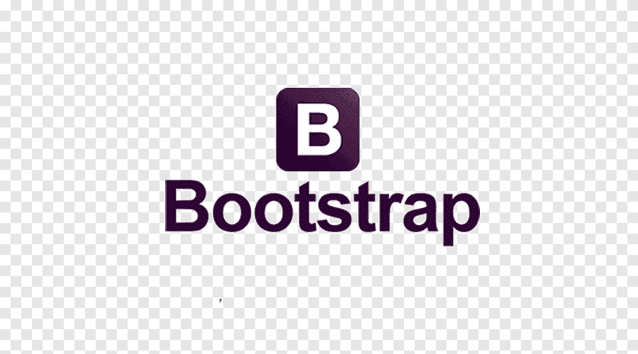

Q) What is the Priority of a Web Developer?
A web developer or programmer is someone who takes a web design - which has been created by either a client or a design team - and turns it into a website.
They do this by writing lines and lines of complicated code, using a variety of languages. Web developers have quite a difficult job, because they essentially have to take a language we understand, such as English, and translate it into a language that a computer understands, such as Python or HTML.
“When choosing a development company for your website, it is very important not only to look at the price, but also the quality of the work you hope to obtain and it is that a good Web of quality, realized of the hand of good engineers who have been working in the sector for years, can make you recover the investment in a short time and generate great benefits in the long term. Of course, to have a quality website the initial investment will probably be greater than you expect and maybe right now you think that the web you need does not require much quality, or a lot of work, but stop to think for a moment and consider the possibility that you are totally wrong, because that may depend on the future of your company as well as Web Development company India.The image that you want to transmit to the clients of the same one and the investment that you will have to do in the web once developed.
With all this I do not mean that you have to ask for a loan from the bank to pay for the web. If the project you have in mind takes more work than you initially thought and the budget is out of your expectations, you can always limit and remove features that are dispensable. In this way you can publish the Web as soon as possible, so that once the initial investment is amortized, you can continue investing in adding those features that were left in the background.
There are few Web Development Company In India hat right now could not survive, if they were not involved in the online world and it costs much less to make you a quality professional website, with a higher initial investment, to make you a website on which you have to invest, and then large amounts in development and consulting to correct deficiencies initially not contemplated. In the worst case, a bad development, may even force you to throw all the code of the web to the trash, to have to start from scratch.
But what is quality of Web Development Services India? Let's see the characteristics that a website must have in order to be considered quality and professional:
In any development project, meetings are always held to develop an initial analysis, gathering all the requirements and objectives of the web that the client wants. At this point you should have a proactive attitude, proposing functionalities that could be interesting or alternative ideas that we know can generate good results.”
― web development

“web designing
Cyberworx technologies is a Web designing and development companies in India which is result oriented. We deliver a nice website design and execute digital marketing campaigns that lead to the success of the clients. we're a preferred Website designing Company we design and develop a website that will certainly attract masses to visit you.”

“Your website is the center of your digital eco-system, like a brick and mortar location, the experience matters once a customer enters, just as much as the perception they have of you before they walk through the door.”
“Search Engine Optimization is no longer about stuffing keywords and attempting to trick Google into ranking your website. It's about creating a user experience that is data driven. We know what customers are searching for and we know how to get them to a page. It's a combination of science and art to successfully rank a website.”

“Udaipur web designer is an Best Web Design and Development company in Udaipur. Offering various online web design services, Seo, Mobile app development, Digital Marketing, Graphics designing etc.. or more. Our expert has created award-winning mobile apps in Udaipur and Build custom websites and projects with cheapest prices in Udaipur. Make website now in your areas today.”

This is the final section in this tutorial on HTML. I'd like to use it to briefly summarise some of the main points and discuss where you should go from here.
After reading through this tutorial you should now have a very solid foundation in writing elegant HTML to create web pages. It is really just the tip of the ice-berg however. For some of you that will be enough for your needs, for others it is the starting point for further discovery.
You now understand how to use the basic HTML tags to mark up your content so that it may be viewed in a browser. Remember to strive for clean, elegant and easy to read HTML.
Remember, the aim of HTML is to describe the content and only to do this. Well written HTML gives your content meaning and makes the overall structure of the document easy to understand.

However, I think the real problem with the CSS language is that it’s simple but not easy. What I mean by that is that it doesn’t take much time to learn how to write CSS but it takes extraordinary effort to write “good” CSS. Within a week or two, you can probably memorize all the properties and values and make really beautiful designs in the browser without any plugins or dependencies and wow all you’re friends. But that’s not what I mean by “good CSS.”
In an effort to define what that is I’ve been thinking a lot lately about how we can identify what bad CSS is first. In other areas of programming, developers tend to talk of code smells when they describe bad code; hints in a program that identify that, hey, maybe this thing you’ve written isn’t a good idea. It could be something simple like a naming convention or a particularly fragile bit of code.

I’m a self-taught front end developer. For the first part of my career, I was an HR guy.
The thing that really helped me learn how to write code, how to structure code, and, most importantly, how to solve problems, was by writing lots and lots of code.
But this approach isn’t without it’s challenges.
Where do you even start? What projects should you work on? And what happens when you get stuck? I’d make mistakes, spin my tires trying to figure out what was wrong, finally find a fix, and keep going.
One of the biggest challenges about learning JavaScript that I hear from students is that they struggle to think in JavaScript.
They’ve may have learned about the different methods and browser APIs you can use, but have trouble knowing how to combine them into a working script, especially when starting from scratch.

No more spending hours coding your own grid—Bootstrap comes with its own grid system predefined!
Now, you can get straight to filling your containers with content.
Defining custom breakpoints for each column is a snap using their extra small, small, medium, large, and extra large breaks. You can also simply stick to the default as it might already meet the needs of your site.Bootstrap comes with its own code for automatically resizing images based on the current screen size. Just add the .img-responsive class to your images, and the predefined CSS rules take care of the rest.It can even change the shape of your images with the addition of classes like img-circle and img-rounded, and that’s without going back and forth between the code and your design software.